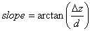
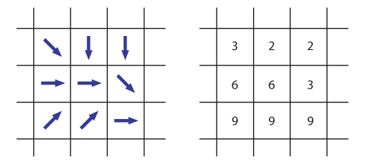
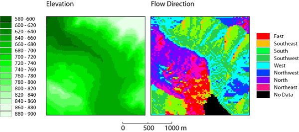
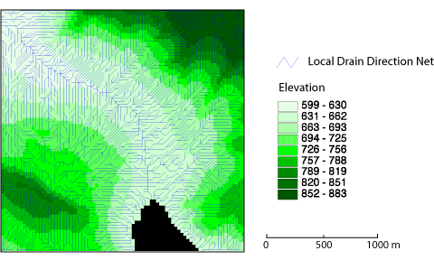

Ableitung von Abflussnetzwerken
Die Basis für die Ableitung vieler hydrologischer Parameter ist ein Gewässernetz, das manuell digitalisiert oder automatisch aus einem digitalen Geländemodell extrahiert werden kann. Lokale Abflussrichtungen in Rastern werden oft nach dem Zifferblock einer Tastatur kodiert. Ein Rasterpunkt (Pixel), von dem Wasser in Richtung Südwesten abfließt, hätte demnach den Wert 1, wobei ein Pixel mit der Abflussrichtung Westen den Wert 4 hätte, usw.
Lokale Abflussrichtungen in einem Raster können mit den Ziffern einer Tastatur kodiert werden.Eine Karte, die die lokale Abflussrichtung für jeden Rasterpunkt enthält, wird als lokales Netz der Fließrichtung (local drain direction net bzw. ldd net) bezeichnet (Burrough et al. 1998). Es gibt zahlreiche Algorithmen um LDD-Netze zu berechnen; jede geht von einer anderen Ausnahme über den Wasserabfluss im Gelände aus. Für eine (interaktive) Vertiefung sei auf die Software Landserf von (Wood 2005) verwiesen.
D8 Algorithmus
Der einfachste und bekannteste ist der sogenannte D8-Algorithmus (oder 8-Punkt-Schütt-Algorithmus) und beruht auf der Annahme, dass, in einer Umgebung von neun Rasterpunkten, das Wasser in Richtung der steilsten Neigung abfließt. Es wird dazu die Neigung zu jedem der acht umliegenden Punkten von einem zentralen Quellpunkt mit folgender Formel errechnet:

wobei d die Entfernung und Δz der Höhenunterschied zwischen den zwei Punkten ist. In einem Raster, bei dem die Pixelbreite 1 beträgt, müssen wir zwischen folgenden zwei Fällen unterscheiden:
- Wenn wir die Neigung in Richtung Norden, Osten, Süden oder Westen errechnen, beträgt die Entfernung zwischen den Rasterpunkten d = 1.
- Wenn wir die Neigung in die diagonalen Richtungen (Nordosten, Südosten, Südwesten, Nordwesten) berechnen wollen, ist die Distanz d zwischen den Rasterpunkten Wurzel(2).
Das lokale Netz der Fließrichtung (LDD-Netz)
Nun wissen wir, wie die Abflussrichtung für einen einzelnen Punkt in der Mitte einer Nachbarschaft von neun Punkten errechnet wird. Indem dieser Ausschnitt als Fenster schrittweise über die gesamte Rastermatrix bewegt wird, können wir jedem Punkt eine lokale Abflussrichtung zuweisen und so ein LDD-Netz erstellen.

LDD-Netz für ein kleines DGM (Links) Lokale Abflussrichtungen sind als Pfeile gekennzeichnet, (Rechts) Lokale Abflussrichtungen nach dem Zeichenblock einer Tastatur gekennzeichnet.Beispiel Türler See
Die nachfolgende Abbildung der Abflussrichtungen zeigt ein 25m-Raster-DGM vom Türlersee-Gebiet und das davon abgeleitete LDD-Netz. Die Seefläche im Süden der Karte muss aus dem Verfahren ausgeschlossen werden, weil die Fließrichtung einer horizontalen Ebene undefiniert ist.

Abflussrichtungen, die von einem 25m-Raster-DGM mit einem D8-Algorithmus errechnet wurden. (Swisstopo 1991)Analog dazu kann ein ldd net in einen Vektordatensatz transformiert und entsprechend visualisiert werden.

Ein LDD-Netz als Vektorkarte..Bearbeiten Sie...
Betrachten wir das folgende Beispiel, in dem das Ursprungspixel und seine acht Nachbarn definierte Höhenwerte haben und die Zellenwerte 1, 2 oder 3 beträgt. Wohin fließt das Wasser? Selektieren Sie die richtige Zelle, indem Sie darauf klicken. (Achtung: dieses kleine Beispiel ist nicht perfekt; wenn zwei Zellen als Ziele gleichermaßen geeignet sind, ist keine Konfliktregel implementiert – die Anwendung wählt einfach die erste der zwei Zellen.